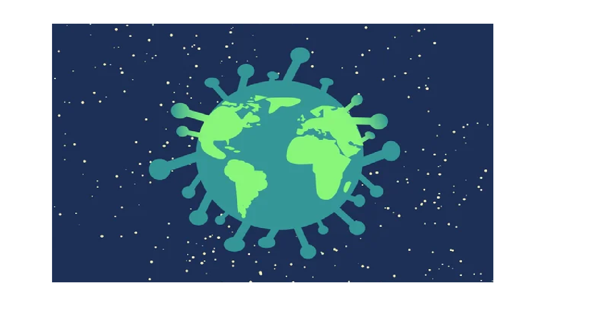

كيف تساعد علوم البيانات على مواجهة فيروس كورونا المستجد؟ Credit: Public Domain CC0 أحد الفروق الجوهرية بين الوباء الذي هاجم العالم قبل مئة عام وسمي بـ"الإنفلونزا الإسبانية"، وما يواجهه العالم منذ بداية العام الحالي 2020 مع فيروس كورونا المستجد، هو كم البيانات الضخمة التي تندفع من التقارير الرسمية، والدراسات العلمية المرتبطة بعلوم الفيروسات والأوبئة بشكل عام، وعائلة فيروسات كورونا بشكل خاص، وتحديد فيروسي "سارس" MERS و"ميرس" SARS. هذا بخلاف البيانات الكبيرة Big Data المتاحة الآن في كل مكان حولنا، مما يولده المستخدمون عبر الشبكات الاجتماعية، وشبكات الاتصالات، ومحركات البحث، والعديد من المعاملات الإلكترونية. وكمثال على ذلك، يمكن عبر تتبُّع حالات البحث المتزايدة يومًا بعد آخر عن أعراض مرضٍ ما على محرك بحث مثل محرك جوجل، ربما يصلح كمؤشر لقرب ظهور وباء معين في منطقةٍ ما. ويجمع علم البيانات Data Science بين ثلاث حزم رئيسية من العلوم، والمهارات، والمعارف، تبدأ بعلوم الإحصاء والرياضيات، ثم مهارات البرمجة، وخاصة الذكاء الاصطناعي وتعلُّم الآلة Machine Learning، ثم المعارف المرتبطة بطبيعة المجال الذي يتم رصد بياناته وتحليلها. ويُعد مجال علوم البيانات من أكثر المجالات طلبًا في سوق العمل في العالم خلال الأعوام الخمسة الماضية، ووفق تقرير موقع "جلاس دور Glassdoor" فهي الوظيفة الأكثر طلبًا في عام 2018 في السوق الأمريكية، وهو ما ذهب إليه أيضًا تقرير لينكد-إن السنوي لعام 2017. ولعل أبرز الجهود الحالية المتعلقة بتوظيف علوم البيانات في مواجهة فيروس كورونا المستجد، التحدي الذي أطلقه مكتب سياسات العلوم والتكنولوجيا في البيت الأبيض (OSTP) منتصف مارس 2020، لبناء مركز بيانات ضخم مفتوح المصدر CORD19، تشارك فيه مؤسسات حكومية، وأكاديمية، وشركات تكنولوجية، مثل مكتبة معاهد الصحة الوطنية الأمريكية NIH، ومعهد ألين للذكاء الاصطناعي، ومختبر كولد سبرينج، وجامعة جورج تاون، بالإضافة إلى شركة جوجل، ومركز أبحاث مايكروسوفت، ومبادرة تشان زوكربيرج، وعشرات من المؤسسات الأخرى. أسئلة وتحديات الواقع ويطرح هذا التحدي مجموعةً من الأسئلة المهمة على الباحثين وعلماء البيانات، في كل مكان في العالم، حول كل ما يتعلق بالفيروس، مثل: ما الذي نعرفه عن طرق انتقال الفيروس، وفترة الحضانة، والعوامل البيئية المؤثرة فيه؟ ما الذي نعرفه عن أصل الفيروس، وجيناته، ومدى تطوره؟ ماذا يجب أن يُتَّبع من الإجراءات، وبخاصة أنظمة الرعاية الصحية؟ ماذا نعرف عن فاعلية التدخلات غير الدوائية، والتشخيص والمراقبة؟ ماذا عن مشاركة المعلومات ووسائل التعاون المشترك، والاعتبارات الأخلاقية للبحث؟ ماذا عن اللقاحات وبرتوكولات العلاجات المتبعة؟ وتستضيف هذا التحدي منصة Kaggle، التي تضم عددًا ضخمًا من علماء البيانات، ومطوري تطبيقات تعلم الآلة ML. جمعت المبادرة حتى الآن أكثر من 40 ألف ورقة بحثية متخصصة. يقول أحمد متولي، باحث في علوم المعلوماتية الحيوية في قسم علوم الوراثة، بجامعة ستانفورد الأمريكية: "يتفاقم الوباء بسرعة كبيرة، ونحن بحاجة إلى فهم الجوانب المختلفة المتعلقة بالفيروس، والتعلم مما ينجح أو يفشل من الإجراءات المتبعة في كل دولة، وتوقع التداعيات الاقتصادية، وكلها نقاط يمكن لعلوم البيانات أن تكون مفيدةً فيها للغاية". ويشارك "متولي" في تحدٍّ آخر، يتعلق بتوظيف علوم البيانات والذكاء الاصطناعي لمواجهة فيروس "كورونا"، كان معهد ماساتشوستس للتكنولوجيا قد أطلقه في إطار الجهود العالمية للبحث عن حلول لهذه الأزمة، وبخاصة ما يتعلق بكيفية الحماية المُثلى للفئات الأكثر عرضةً للإصابة بالفيروس، وكيفية دعم المستشفيات والمؤسسات الصحية بفرق العمل والمعدات والموارد. من جانبه، يشدد "متولي" على أن "هناك جهودًا كثيرة يمكن للبيانات أن تسهم فيها، مثل لوحة المعلومات التفاعلية التي طورها مركز علوم وهندسة النظم (CSSE) في جامعة جونز هوبكنز، وأيضًا تتبُّع النماذج الوبائية، مثل ما رصده تقرير جامعةإمبريال كوليدج البحثية". ومن التطبيقات المفيدة الأخرى، والتي تجمع بين إنترنت الأشياء وعلوم البيانات، استخدام أجهزة المستشعرات الحيوية القابلة للارتداء، لقياس درجات الحرارة، والنبض، وغيرها من المتغيرات الصحية لدى المصابين، أو حتى الأصحاء الذين لديهم ساعات تقيس النبض والحرارة وبعض وظائف الجسد. وهناك بحوث تعمل على جمع وتحليل البيانات الجينومية لتطور فيروسات كورونا السابقة، بما يساعد على توقُّع الطفرة القادمة للفيروس، مثل المعلومات اللحظية التي توفرها منصة Nextstrain التابعة لمركز فريد هوتش Fred Hutch. ويهدف هذا المشروع مفتوح المصدر إلى إتاحة هذه البيانات وأدوات التحليل القوية للجمهور العام، لاستخدامها بغرض رفع مستويات فهم الوباء وتحسين الاستجابة لتفشي المرض. وهناك نموذج آخر في توظيف البيانات لتسهيل عملية محاكاة التجارب الطبية لاختيار الأدوية الأكثر فاعليةً في مكافحة الفيروس، مثل ما فعله حاسوب سومت Summit الأسرع في العالم الذي أنتجته شركة آي بي إم IBM، إذ قام بتحليل 8000 مركب، للعثور على الأدوية الأكثر فاعلية، وكانت النتيجة اقتراح 77 نوع دواء، تم ترتيبها بناء على أفضليتها. تحدي دقة البيانات ومع الحاجة إلى العمل على مدار الساعة لجمع البيانات وتنقيحها وتنظيمها وتحليلها، تمثل مسألة الدقة نقطة جوهرية، خاصة مع وجود حالات اختلاف أو تعارُض في بعض الأحيان حول البيانات المتاحة، وهذا قد يشمل مصادر موثوقة، مثل ما تنصح به منظمة الصحة العالمية بالابتعاد مسافة أكثر من متر للوقاية من فيروس كورونا، بينما اعتمد مركز مكافحة الأمراض والوقاية منها CDC دراسةً تقول إن المسافة يجب ألا تقل عن 4 أمتار. وهناك قائمة كبيرة من الاختلافات، مثل مدى تأثر الفيروس بالحرارة، والجدل المثار حول إمكانية انتقاله عبر الهواء، وفترات بقائه على الأسطح. يرى بول ماكلاكلن -مدير علوم البيانات بمركز أبحاث الذكاء الاصطناعي بشركة إريكسون- مشكلة دقة البيانات المتعلقة بفيروس كورونا المستجد مشكلةً عالمية مرتبطة بطبيعة هذا الفيروس المجهول. ومع ذلك فإنه يعتقد أنها ليست مشكلة تعجيزية، ويقول: "لحسن الحظ، لدى علم البيانات العديد من الطرق لتقييم جودة البيانات، وقياس عدم اليقين حول التقديرات المستخلصة، مثل تحليل حساسية البيانات، واختبار أنظمة محاكاة للتأكد". ويعتقد بعض المتخصصين أن مشكلة عدم وجود بيانات كافية تمثل تحديًا أكبر من وجودها مع عدم دقة بعضها. يقول علي عبد الهادي، أستاذ الرياضيات، ومؤسس برنامج العلوم الإكتوراية بالجامعة الأمريكية بالقاهرة: "يجب أن تتوافر البيانات الرئيسية أولًا، لكي تقوم علوم البيانات بدورها، وتحديدًا في نطاقين زماني ومكاني spatio-temporal، ثم تضاف المتغيرات الأساسية، مثل حالات الإصابة والشفاء والوفيات". ويضيف: يعتمد عملنا على توافر البيانات، فإذا لم تتوافر لا يمكن التنبؤ بمعدلات الانتشار المستقبلية، ما يؤثر على توجيه الدعم المناسب بصورة استبقائية للمناطق الحرجة. يتفق معه "ماكلاكلن"، الذي يُعد أحد علماء البيانات البارزين في العالم، ويقول: "العديد من البلدان ليس لديها بيانات كافية لتوصيف نطاق وطبيعة انتشار الفيروس، خاصةً مع كون نسبة كبيرة من الأشخاص المصابين لا تظهر عليهم الأعراض، وهذه ليست عقبةً بسيطة؛ لأنها تصعِّب مهمات الحكومات في التعامل مع الفيروس، وتقوِّض قدرتها على تحديد الموارد المناسبة، أو اتخاذ الإجراءات السليمة في التوقيت المناسب، أو تتبُّع الحالات المخالطة". الفيروس والبيانات والخصوصية تعتمد دول كثيرة في العالم على طرق مختلفة في جمع البيانات المتعلقة بالفيروس وعرضها، ولكن وفق تصريحات منظمة الصحة العالمية، فأغلب دول الشرق الأوسط متعاونة وترسل معلوماتها بانتظام، ومنها الحكومة المصرية، وهو ما علق عليه عمرو طلعت -وزير الاتصالات المصري- قائلًا: "منذ بداية الأزمة والحكومة تعمل على توظيف البحوث التطبيقية وحلول الذكاء الاصطناعي لتنفيذ أفضل الإجراءات وفق البيانات المتاحة"، مؤكدًا أن وزارة الصحة هي التي تمتلك البيانات المتعلقة بتطور فيروس كورونا المستجد في مصر. وحول استعانة الحكومة المصرية بتطبيقات تعتمد على توظيف بيانات المستخدمين على الهواتف المحمولة، ويمكنها رصد تحركاتهم للتحذير في حالة الاقتراب من أماكن تشهد حالات مصابة بالفيروس، كما فعلت الصين، وكما هو الحال مع أمريكا التي أطلقت نموذجًا مشابهًا، قامت بتطويرهشركتا جوجل وآبل. أقر وزير الاتصالات وتكنولوجيا المعلومات المصري بتفكير الحكومة في الاعتماد على مثل هذه التطبيقات. وبسؤاله حول مدى تأثيرها على خصوصية المستخدمين، أكد: هذا يُعد أحد الأسباب التي تجعلنا نتروى فيما يتعلق بمثل هذه الخيارات، لضمان أنها ستكون مفيدة، دون أن تمثل انتهاكًا لخصوصية المستخدمين. بعد هذه التصريحات، أطلقت وزارة الصحة بالفعل تطبيق "صحة مصر"، الذي يعمل على جمع بيانات من المستخدمين Crowdsourcing، بالتحذير من الاقتراب من الأماكن التي سُجِّلت فيها حالات إصابة. ووفق أحمد متولي، تمثل خصوصية الأفراد تحديًا كبيرًا أمام علماء البيانات في أزمة مفاجئة مثل Covid19، وهو ليس بالتحدي الهين، خاصةً في الدول التي لديها تشريعات تحمي خصوصية البيانات، مثل قانون الاتحاد الأوروبي GDPR لحماية البيانات، وكذلك قواعد الخصوصية الأمريكية HIPAA التي تحمي السجلات الطبية للمواطنين، مطالبًا بالتعامل الجاد مع هذا التحدي؛ لمنع العواقب الخطيرة لانتهاك البيانات. ومن جانبه كشف عماد الأزهري -مدير إستراتيجية البيانات الضخمة والذكاء الاصطناعي في فودافون مصر- أن مسألة الخصوصية تختلف من جيل إلى آخر، وفق بحث أجرته معامل البحث والتطوير لدينا، أكد أن الأجيال الحديثة -خاصة جيل Z وما بعده- لديهم حرص أقل على خصوصية البيانات مقارنة بالأجيال الأكبر. ويمتاز هذا الجيل بأنه كبر وترعرع في عصر الإنترنت والشبكات الاجتماعية والهواتف الذكية، ما أثر بصورة كبيرة على مهاراته ومعارفه وسلوكه، وهو ما يجب أخذه دائمًا في الاعتبار. بينما يرى "ماكلاكلن" أن هناك الكثير الذي يمكن فعله دون اللجوء إلى رفع ستار خصوصية البيانات، وضرب مثلًا بتحدي (CORD-19) الذي أطلقه مكتب البيت الأبيض للتكنولوجيا والسياسات، وقال :"أعمل مع 400 باحث ومتطوع من داخل معامل أبحاث شركة إريكسون باستخدام الذكاء الاصطناعي، وعلوم البيانات في هذا الشأن، اعتمادًا على نتائج الآلاف من أوراق بحثية كاملة".
